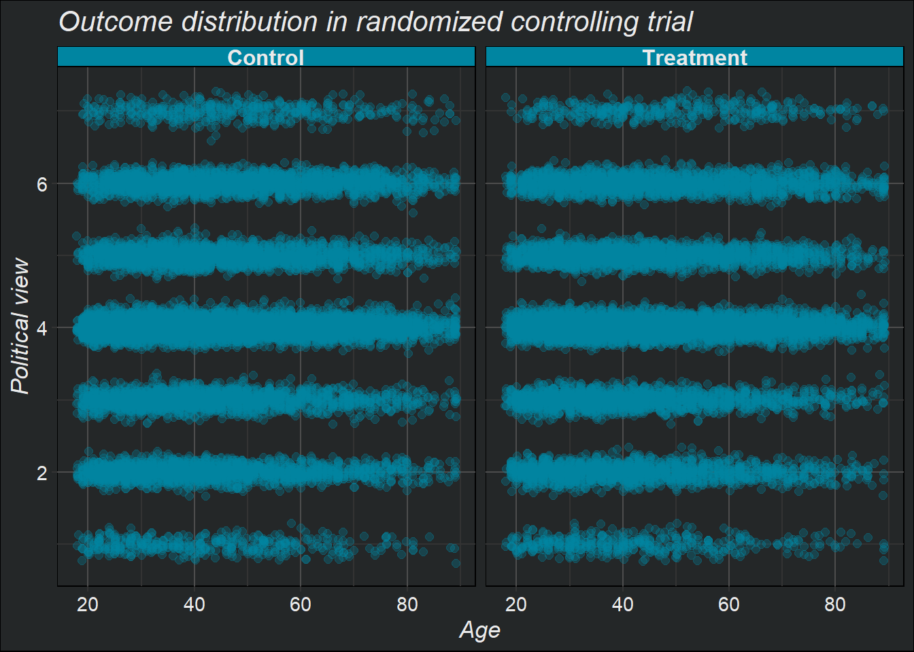
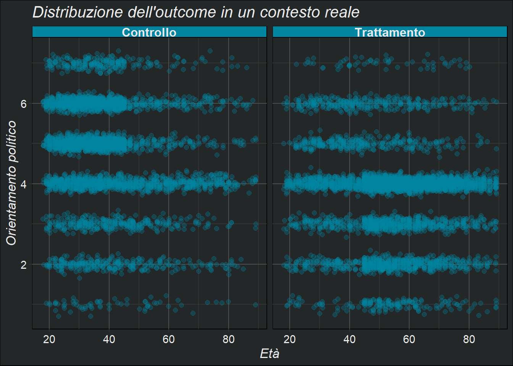
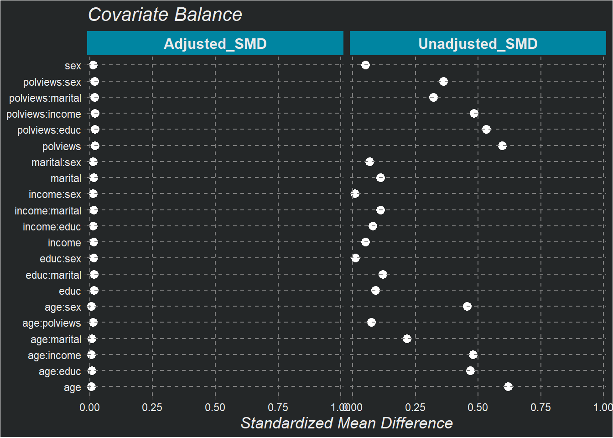

# causalwiz is a free package for causal inference
# https://github.com/carminemnc/causalwiz
library(causalwiz)
library(ggplot2)
library(lmtest)
library(sandwich)
theme_set(ctheme("dark"))Inferenza causale pt.1
casual inference
R
Il dilemma dell’uovo e della gallina
Perchè l’inferenza causale?

L’inferenza causale è fondamentale perché ci permette di comprendere le relazioni tra cause ed effetti nei fenomeni che osserviamo. A differenza dell’analisi della semplice associazione tra variabili, l’inferenza causale mira a stabilire relazioni causali, ovvero a identificare l’effetto di una variabile (il trattamento) sulla variabile di interesse (l’outcome), tenendo conto di tutte le possibili covariate.
Esempi concreti di applicazione dell’inferenza causale possiamo trovarli in:
Economia: Gli economisti utilizzano l’inferenza causale per studiare l’impatto di politiche economiche, come cambiamenti nelle tasse o negli investimenti pubblici, sulla disoccupazione, i redditi e la crescita. Questo permette di valutare l’efficacia delle misure economiche.
Criminologia: I ricercatori applicano l’inferenza causale per comprendere i fattori che influenzano la criminalità, come la relazione tra povertà, istruzione e tasso di criminalità. Ciò informa le politiche di prevenzione e contrasto della criminalità.
Medicina: La ricerca clinica utilizza l’inferenza causale per stabilire eventuali relazioni tra l’assunzione di farmaci e l’insorgenza di effetti collaterali, al fine di migliorarne la sicurezza.
I dati che utilizzeremo:
Code
# Load data
data(welfare_small)
data <- welfare_small
# Treatment: does the the gov't spend too much on "welfare" (1) or "assistance to the poor" (0)
treatment <- "w"
# Outcome: 1 for 'yes', 0 for 'no'
outcome <- "y"
# Additional covariates
covariates <- c("age", "polviews", "income", "educ", "marital", "sex")In questo capitolo utilizzeremo una versiona abbreviata di un dataset pubblico fornito da (Smith,2016)
Il contesto riguarda un sondaggio in cui agli individui veniva chiesto il loro parere sulla spesa del governo americano per il welfare.
Il trattamento, \(W\), consiste nella formulazione del quesito in due formulazioni diverse:
- Ad una metà dei partecipanti il quesito veniva posto sul tema “welfare”
- All’altra metà dei partecipanti al sondaggio il quesito veniva posto sottoforma di “assistenza ai poveri”
L’outcome è una variabile binaria \(Y_i\) che indica se la risposta è stata positiva o meno. Oltre al trattamento e all’outcome il dataset contiene informazioni demografiche come l’età, l’orientamento politico1, il reddito, l’educazione, lo stato civile e il sesso.
1. Notazione
Sia \((\mathbf{X}_i, W_i, Y_i)\) per l’individuo \(i\), dove:
- \(\mathbf{X}_i\) è il vettore di covariate osservate per l’individuo \(i\)
- \(W_i \in \{0, 1\}\) indica l’assegnazione al trattamento (0 = controllo, 1 = trattamento)
- \(Y_i\) è l’outcome osservato
Assumiamo che i dati siano generati in modo indipendente e i.i.d. (identicamente distribuito).
Introduciamo i concetti di potenziali outcomes:
- \(Y_i(1)\) è l’outcome potenziale dell’individuo \(i\) se fosse stato assegnato al trattamento
- \(Y_i(0)\) è l’outcome potenziale dell’individuo \(i\) se fosse stato assegnato al controllo
Quindi l’outcome osservato \(Y_i\) corrisponde a uno dei due potenziali outcomes:
\[ Y_i \equiv Y_i(W_i) = \begin{cases} Y_i(1) & \text{se } W_i = 1 \\ Y_i(0) & \text{se } W_i = 0 \end{cases} \tag{1}\]
Il nostro obiettivo
L’obiettivo è stimare l’effetto medio del trattamento (in inglese ATE, Average treatment effect ):
\[ \tau = \mathbb{E}[Y_i(1) - Y_i(0)] \tag{2}\]
L’ATE fornisce una misura complessiva dell’impatto di un trattamento sulla popolazione target.
Stimare l’ATE è il primo passo per studiare i meccanismi attraverso cui un trattamento influenza gli outcome.
La stima dell’ATE è cruciale per valutare l’impatto di interventi, supportare le decisioni di policy, comprendere i meccanismi causali e progettare future ricerche empiriche in modo efficace. È un passaggio fondamentale nell’analisi causale.
In un contesto sperimentale…
In un contesto sperimentale, l’assegnazione al trattamento è indipendente dai potenziali outcomes:
\[ Y_i(1), Y_i(0) \perp W_i \tag{3}\]
In altre parole, non ci sono covariate che influenzano sia l’assegnazione al trattamento che l’outcome.
Ciò che ci aspetteremmo in un contesto sperimentale ad esempio è che la distribuzione delle covariate per i due outcomes, \(Y_i(0)\) e \(Y_i(1)\) siamo simili, come nel seguente esempio:
Code
ggplot(data, aes(x = age + rnorm(nrow(data), sd = 0.1),
y = polviews + rnorm(nrow(data), sd = 0.1))) +
geom_point(size = 2, alpha = 0.3) +
facet_wrap(
vars(ifelse(w, 'Control', 'Treatment'))
) +
labs(
x = 'Age',
y = 'Political view',
title = 'Outcome distribution in randomized controlling trial'
)
In un contesto reale…
In un contesto reale (o osservazionale) però molto spesso l’esposizione al trattamento è direttamente dipendente dalle covariate.
Nell’esempio presentato qui è chiaramente visibile che:
La popolazione trattata(o di trattamento) ,\(Y_i(1)\) , risulta avere un età più alta e una visione politica più di destra/conservatrice
Mentre la popolazione non trattata (o di controllo), \(Y_i(1)\) , risulta essere più giovane e con una visione politica più di sinistra/liberale
Code
# in un contesto reale...
data_real <- data
# defining the group that will be dropped with some high probability
grp <- ((data_real$w == 1) & # if treated AND...
(
(data_real$age > 45) | # belongs an older group OR
(data_real$polviews < 5) # more conservative
)) | # OR
((data_real$w == 0) & # if untreated AND...
(
(data_real$age < 45) | # belongs a younger group OR
(data_real$polviews > 4) # more liberal
))
# Individuals in the group above have a smaller chance of being kept in the sample
prob.keep <- ifelse(grp, .15, .85)
keep.idx <- as.logical(rbinom(n=nrow(data_real), prob=prob.keep, size = 1))
# Dropping
data_real <- data_real[keep.idx,]Code
ggplot(data_real,
aes(x = age + rnorm(nrow(data_real), sd = 0.1),
y = polviews + rnorm(nrow(data_real), sd = 0.1))) +
geom_point(size = 2, color = '#0085A1', alpha = 0.3) +
facet_wrap(
vars(ifelse(w, 'Control', 'Treatment'))
) +
labs(title = "Outcome distribution in a real scenario",
x = "Age",
y = "Political view")
Questo ci permette di introdurre quelle che sono le ipotesi fondamentali da adottare nel momento in cui non siamo in un contesto sperimentale ma piuttosto in un contesto osservazionale, in cui per poter identificare l’effetto causale del trattamento abbiamo bisogno che le seguenti ipotesi siano valide:
Ipotesi di confondimento (unconfoundedness):
- Questa ipotesi afferma che, una volta condizionato sulle covariate osservate \(X_i\), l’assegnazione al trattamento \(W_i\) è indipendente dai potenziali outcomes \(Y_i(1)\) e \(Y_i(0)\).
- In altre parole, tutte le possibili fonti di selezione nel trattamento possono essere spiegate dalle covariate osservate.
- Matematicamente: \(Y_i(1), Y_i(0) \perp W_i | X_i\) - Questa ipotesi permette di identificare l’effetto causale del trattamento, altrimenti non osservabile.
Ipotesi di sovrapposizione (overlap):
- Questa ipotesi afferma che per ogni possibile combinazione di valori delle covariate \(X_i\), esiste una probabilità positiva di essere assegnati sia al trattamento che al controllo.
- In altre parole, non ci devono essere regioni del supporto delle covariate in cui tutti gli individui sono sempre trattati o sempre di controllo.
- Matematicamente: \(\eta < e(x) < 1 - \eta\) per qualche \(\eta > 0\) e per tutti i \(x\), dove \(e(x) = \mathbb{P}[W_i = 1 | X_i = x]\) è la propensione al trattamento. - Questa ipotesi garantisce che sia possibile confrontare unità trattate e di controllo con caratteristiche simili.
L’ipotesi di confondimento assicura che non ci siano variabili non osservate che influenzano sia l’assegnazione al trattamento che l’outcome. L’ipotesi di sovrapposizione garantisce che ci siano unità di confronto appropriate per ogni individuo trattato.
Queste ipotesi sono cruciali per l’applicabilità di metodi come l’IPW e l’AIPW, discussi nelle sezioni successive.
2. Difference in means
Lo stimatore della differenza delle medie (difference-in-means) è un semplice stimatore non distorto dell’ATE. L’idea è calcolare la media dei outcomes nel gruppo di trattamento meno la media dei outcomes nel gruppo di controllo:
\[ \hat{\tau}_\text{DIFF} = \frac{1}{n_1} \sum_{i: W_i = 1} Y_i - \frac{1}{n_0} \sum_{i: W_i = 0} Y_i \tag{4}\]
dove \(n_w = |\{i: W_i = w\}|\) è il numero di individui nel gruppo \(w\).
Lo stimatore della differenza delle medie può essere utilizzato solamente nel contesto sperimentale, ovvero quando l’assegnazione al trattamento è casuale e indipendente dai potenziali outcomes.
In questo caso, l’ipotesi di indipendenza tra assegnazione al trattamento e potenziali outcomes cioè l’ipotesi che \(Y_i(1), Y_i(0) \perp W_i\) è soddisfatta.
Ciò significa che non ci sono fattori confondenti che influenzano sia l’assegnazione al trattamento che l’outcome.
Sotto questa ipotesi, la differenza tra la media degli outcomes nel gruppo di trattamento e la media degli outcomes nel gruppo di controllo fornisce una stima non distorta dell’effetto medio del trattamento (ATE).
In contesti osservazionali, invece, sono necessari metodi più avanzati come l’IPW e l’AIPW.
Stima di \(\tau\) in un contesto sperimentale
La media nel gruppo di trattamento:
\[
\frac{1}{n_1} \sum_{i: W_i = 1} Y_i
\]
Code
Y <- data[,outcome]
W <- data[,treatment]
print(mean(Y[W==1]))[1] 0.09211436e calcolando la media nel gruppo di controllo
\[ \frac{1}{n_0} \sum_{i: W_i = 0} Y_i \]
Code
print(mean(Y[W==0]))[1] 0.438129Code
fmla <- formula(paste0(outcome, '~', treatment))
ols <- lm(fmla, data=data)
coeftest(ols, vcov=vcovHC(ols, type='HC2'))[2,] Estimate Std. Error t value Pr(>|t|)
-0.346014670 0.004804239 -72.022788469 0.000000000 Otteniamo chiaramente che
\[ \hat{\tau}_\text{DIFF} = \frac{1}{n_1} \sum_{i: W_i = 1} Y_i - \frac{1}{n_0} \sum_{i: W_i = 0} Y_i = \: \sim -0.34 \]
Questo significa che, in media, le persone nel gruppo di trattamento hanno risposto in modo più negativo rispetto al gruppo di controllo2.
3. Direct estimator
Lo stimatore diretto (direct estimation) è un metodo per stimare l’effetto medio del trattamento (ATE) che può essere utilizzato in contesti osservazionali, ovvero quando l’assegnazione al trattamento non è casuale ma dipende dalle covariate osservate \(X_i\).
Questo stimatore sfrutta la seguente scomposizione:
\[ \mathbb{E}[Y_i(1) - Y_i(0)] = \mathbb{E}[\mathbb{E}[Y_i|X_i, W_i=1]] - \mathbb{E}[\mathbb{E}[Y_i|X_i, W_i=0]] \]
La procedura per applicare lo stimatore diretto è la seguente:
- Stimare \(\mu(x, w) = \mathbb{E}[Y_i|X_i=x, W_i=w]\) utilizzando metodi di regressione non parametrici.
- Predire \(\hat{\mu}(X_i, 1)\) e \(\hat{\mu}(X_i, 0)\) per ogni osservazione.
- Calcolare la media delle differenze predette:
\[ \hat{\tau}_\text{DM} = \frac{1}{n} \sum_{i=1}^n \left[\hat{\mu}(X_i, 1) - \hat{\mu}(X_i, 0)\right] \tag{5}\]
Questo stimatore sfrutta la regressione per ottenere stime più accurate dell’ATE rispetto al semplice difference-in-means visto precedentemente.
Quando usarlo: Lo stimatore diretto può essere utilizzato nel contesto osservazionale, quando l’ipotesi di confondimento (\(Y_i(1), Y_i(0) \perp W_i | X_i\)) è soddisfatta. Ciò significa che tutte le variabili confondenti sono state misurate e incluse nelle covariate \(X_i\).
Quando non usarlo: Lo stimatore diretto ha alcuni svantaggi:
- Dipende fortemente dalla corretta specificazione del modello per \(\mu(x, w)\). Se il modello è mal specificato, le stime saranno distorte.
- Non gode delle stesse proprietà asintotiche (come l’efficienza) degli stimatori più avanzati come l’AIPW.
Pertanto, quando possibile, è preferibile utilizzare metodi come l’AIPW, che sono più robusti alle ipotesi di modellazione.
4. IPW (Inverse propensity-weighted estimator)
Supponiamo..
Supponiamo di voler stimare l’effetto medio di un certo intervento di apprendimento sui voti degli studenti, misurati su una scala da 0 a 100.
Eseguiamo due esperimenti separati in scuole di tipo A e B. Supponiamo che i voti tra gli studenti trattati:
- nella scuola A, siano approssimativamente distribuiti come \(Y_i(1)|A \sim \mathcal{N}(60, 5^2)\)
- nella scuola B, siano distribuiti come \(Y_i(1)|B \sim \mathcal{N}(70, 5^2)\)
Il problema è che l’iscrizione al trattamento non è casuale, ma volontaria:
- Nelle scuole di tipo A, solo il 5% degli studenti si iscrive al trattamento.
- Nelle scuole di tipo B, il 40% degli studenti si iscrive al trattamento.
Pertanto, se prendessimo la media dei voti degli studenti trattati senza tenere conto dell’appartenenza scolastica, gli studenti della scuola \(B\), che hanno voti medi più alti, sarebbero sovrarappresentati e quindi la nostra stima dei voti degli studenti trattati sarebbe distorta verso l’alto.
Per avere una stima non distorta dell’effetto medio del trattamento, bisogna tenere conto di questa differenza di probabilità di iscrizione tra le due scuole. In questo modo, si può ribilanciare il campione e calcolare una media ponderata dei voti degli studenti trattati che non risenta della diversa composizione dei due gruppi.
L’IPW
\[ \hat{\tau}_\text{IPW} = \frac{1}{n} \sum_{i=1}^n Y_i \left[ \frac{W_i}{\hat{e}(X_i)} - \frac{(1 - W_i)}{1 - \hat{e}(X_i)} \right] \tag{6}\]
L’estimatore inverse propensity-weighted (IPW) è un metodo per stimare l’effetto medio del trattamento (ATE) che può essere utilizzato in contesti osservazionali, ovvero quando l’assegnazione al trattamento non è casuale ma dipende dalle covariate \(X_i\).
L’idea chiave dell’IPW è di utilizzare i pesi inversi della propensione al trattamento per “bilanciare” il confronto tra individui trattati e di controllo.
La procedura per applicare l’IPW è la seguente:
- Stimare la propensione al trattamento (o propensity score), \(e(X_i) = \mathbb{P}[W_i = 1 | X_i]\) , utilizzando un modello di regressione (preferibilmente non parametrico, ad esempio: logistica).
- Calcolare i pesi inversamente proporzionali alla propensione stimata:
- Per gli individui trattati: \(\frac{W_i}{\hat{e}(X_i)}\)
- Per gli individui di controllo: \(\frac{(1 - W_i)}{(1 - \hat{e}(X_i))}\)
- Calcolare la media ponderata dei outcomes
Quando usarlo: L’IPW può essere utilizzato nel contesto osservazionale, quando sono soddisfatte le ipotesi di confondimento (\(Y_i(1), Y_i(0) \perp W_i | X_i\)) e di sovrapposizione (\(\eta < e(x) < 1 - \eta\) per qualche \(\eta > 0\)).
Vantaggi dell’IPW:
È un metodo semplice da implementare.
È robusto: se il modello per la propensione è correttamente specificato, l’IPW fornisce stime non distorte dell’ATE.
Svantaggi dell’IPW:
- Quando la propensione al trattamento è molto piccola, i pesi diventano molto grandi, rendendo lo stimatore instabile e con alta varianza.
Code
results <- ipw_estimators(
data = data_real,
estimation_method = 'IPW',
outcome = outcome,
treatment = treatment,
covariates = covariates,
model_specification = 'linear',
output = TRUE,
)Generated formula:
w ~age+polviews+income+educ+marital+sex
Difference-in-means estimation (benchmark):
Estimate Std. Error t value Pr(>|t|)
-2.913581e-01 8.599054e-03 -3.388257e+01 5.607391e-237
IPW estimation:
Estimate Std Error t value Pr(>|t|)
-3.294320e-01 1.320409e-02 -2.494923e+01 9.412179e-127 - L’IPW non sfrutta appieno l’informazione contenuta nelle covariate per migliorare l’efficienza della stima.
Per superare questi svantaggi, nella prossima sezione verrà introdotto un metodo più sofisticato, l’AIPW, che combina i vantaggi dell’IPW e della regressione diretta.
5. AIPW (Augmented inverse propensity-weighted estimator)
L’estimatore AIPW è disponibile in contesti con ipotesi di non confondimento e overlapping. La sua formula è la seguente:
\[ \begin{equation}\begin{aligned}\hat{\tau}_\mathrm{AIPW} &:= \frac{1}{n} \sum_{i=1}^n \left(\hat{\mu}_{-i}(X_i, 1) - \hat{\mu}_{-i}(X_i, 0)\right) + \\ &\quad \frac{W_i}{\hat{e}_{-i}(X_i)} (Y_i - \hat{\mu}_{-i}(X_i, 1)) \: - \\ &\quad \frac{1-W_i}{1-\hat{e}_{-i}(X_i)} (Y_i - \hat{\mu}_{-i}(X_i, 0))\end{aligned}\end{equation} \tag{7}\]
Vantaggi dell’estimatore AIPW:
- Doppia robustezza: l’estimatore è corretto se almeno uno tra il modello di outcome \(\hat{\mu}(X_i, w)\) o il modello di propensity score \(\hat{e}(X_i)\) è corretto.
- Efficienza: sotto ipotesi deboli, l’AIPW è asintoticamente efficiente, ovvero ha la minima varianza asintotica tra una classe ampia di stimatori.
- Normalità asintotica: l’AIPW è asintoticamente normale, permettendo un facile calcolo di errori standard e p-value.
Rispetto agli altri stimatori visti precedentemente:
- È più efficiente del difference-in-means anche in contesti sperimentali.
- È più robusto del direct estimator e dell’IPW quando i modelli sono mal specificati.
Svantaggi:
- Richiede la stima di due modelli (outcome e propensity score), il che può essere impegnativo in pratica.
- Quando i propensity score sono molto vicini a 0 o 1, l’AIPW può avere prestazioni instabili.
In sintesi, l’AIPW è uno stimatore raccomandato in contesti osservazionali con ipotesi di non confondimento e overlapping, grazie alla sua doppia robustezza e efficienza asintotica. La sua implementazione può però risultare più complessa rispetto ad altri stimatori.
Code
results <- ipw_estimators(
data = data_real,
estimation_method = 'AIPW',
outcome = outcome,
treatment = treatment,
covariates = covariates,
model_specification = 'linear',
output = TRUE,
target.sample = "control"
)Generated formula:
w ~age+polviews+income+educ+marital+sex
Difference-in-means estimation (benchmark):
Estimate Std. Error t value Pr(>|t|)
-2.913581e-01 8.599054e-03 -3.388257e+01 5.607391e-237
AIPW estimation:
Estimate Std Error t value Pr(>|t|)
-0.31920790 0.01071585 -29.78839639 0.00000000 6. Elementi di diagnostica
Come abbiamo visto, in contesti osservazionali le distribuzioni delle covariate possono essere molto diverse tra individui trattati e non trattati. Tali discrepanze possono portare a stime distorte dell’ATE. Ci si aspetterebbe che ponderando verso l’alto o verso il basso le osservazioni in base ai pesi di propensione inversi, le loro medie siano simili.
In effetti, dovremmo attenderci anche che le medie delle funzioni di base delle covariate siano simili dopo la ponderazione. Questa proprietà è chiamata equilibrio. Un modo per verificarlo è il seguente:
Data una certa variabile \(Z_i\) (ad esempio, una covariata \(X_{i1}\), o un’interazione tra covariate \(X_{i1}X_{i2}\), o un polinomio nelle covariate \(X_{i1}^2\), ecc.), possiamo verificare la differenza media standardizzata assoluta (ASMD) di \(Z_i\) tra individui trattati e non trattati nei nostri dati,
\[\frac{|\bar{Z}_1 - \bar{Z}_0|}{\sqrt{s_1^2 + s_0^2}} \tag{8}\]
dove \(\bar{Z}_1\) e \(\bar{Z}_0\) sono le medie campionarie di \(Z_i\), e \(s_1\) e \(s_0\) sono le deviazioni standard di \(Z_i\) per i due campioni di individui trattati e non trattati. Successivamente, possiamo verificare la stessa quantità per le loro controparti ponderate \(Z_i W_i/\hat{e}(X_i)\) e \(Z_i (1-W_i)/(1-\hat{e}(X_i))\).
Se le nostre propensioni sono ben calibrate, l’ASMD per la versione ponderata dovrebbe essere vicina allo zero.
Code
results <- ipw_estimators(
data = data_real,
estimation_method = 'AIPW',
outcome = outcome,
treatment = treatment,
covariates = covariates,
model_specification = 'linear',
output = TRUE,
target.sample = "control"
)Generated formula:
w ~age+polviews+income+educ+marital+sex
Difference-in-means estimation (benchmark):
Estimate Std. Error t value Pr(>|t|)
-2.913581e-01 8.599054e-03 -3.388257e+01 5.607391e-237
AIPW estimation:
Estimate Std Error t value Pr(>|t|)
-0.32002938 0.01084679 -29.50452793 0.00000000 Code
bal <- aipw_balancer(
results$model_spec_matrix,
results$treatment_variable,
results$e_hat
)
cov_bal_plot(results$model_spec_matrix,
bal$unadjusted_cov,
bal$adjusted_cov)
Footnotes
La variabile “Orientamento politico” cattura le opinioni politiche dei partecipanti su una scala ordinale con valori che vanno tipicamente da 1 (estremamente conservatore) a 7 (estremamente liberale). Valori più bassi indicano una visione politica più di destra/conservatrice, mentre valori più alti indicano una visione più di sinistra/liberale.↩︎
Possiamo stimare l’ATE attraverso una regressione lineare del tipo:
\[ Y_i = Y_i(0) + W_i(Y_i(1) - Y_i(0)) \]↩︎